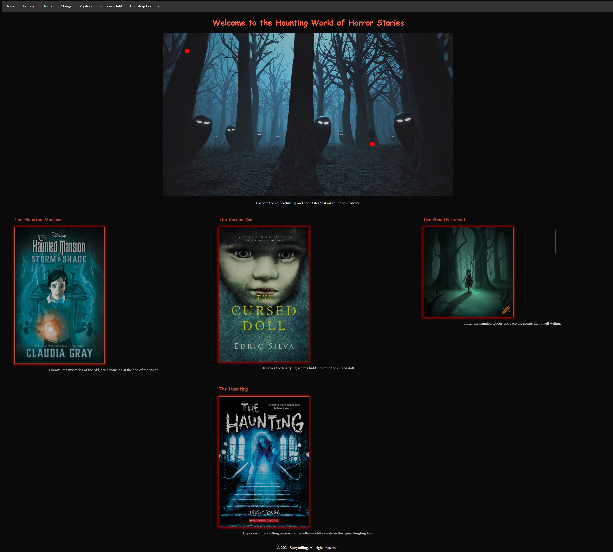

Work Samples
Scary Book Website
Project Overview: For one of my coursework assignments, I developed a website dedicated to showcasing a collection of spooky books. The goal was to create an engaging, immersive experience that resonated with the eerie and chilling theme of the books.
Role and Responsibilities: As the lead developer for this project, I handled both the design and development aspects. My responsibilities included crafting a visually compelling and thematically cohesive design, as well as coding the site to ensure it was both functional and responsive.
Project Goals:
- Create a Thematic Experience: Capture the essence of horror and suspense through the website's design and content.
- Showcase a Collection: Feature various spooky books with detailed descriptions and interactive elements.
- Engage the Audience: Create an engaging experience with thematic visuals and interactive features.
Design and Development:
- Theme and Aesthetics: Incorporated a dark color palette with rich reds and grays, using custom illustrations and eerie fonts.
- User Experience: Added interactive elements like hover effects and dynamic content to enhance the spooky experience.
- Responsiveness: Ensured the website looked and functioned well on various devices.
Technologies and Tools:
- HTML/CSS: Built the website structure and styling with custom spooky-themed styles.
- JavaScript: Implemented interactive elements such as a book carousel and lightbox effects.
- Photoshop: Designed custom graphics and visual elements for a cohesive look.
Outcome: The final product was a visually striking and thematically immersive website that effectively conveyed the spooky atmosphere of the book collection. Feedback was positive, highlighting the engaging design and thematic elements.
Conclusion: This project allowed me to apply my web development skills and creatively integrate thematic design elements. It reinforced the importance of a cohesive user experience aligned with the project's theme.
